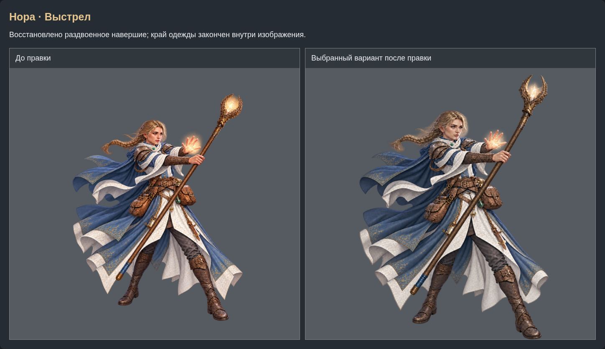
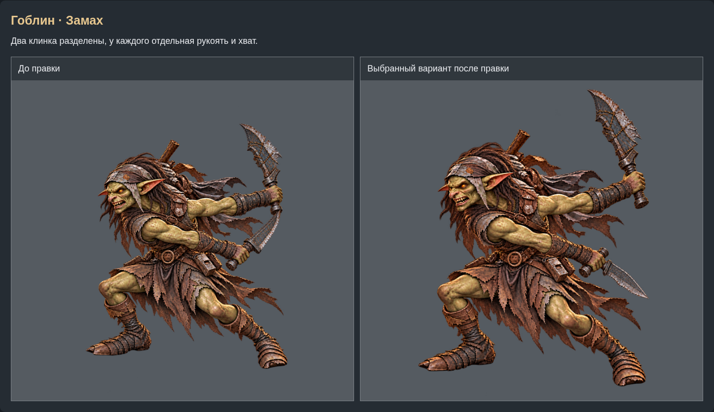
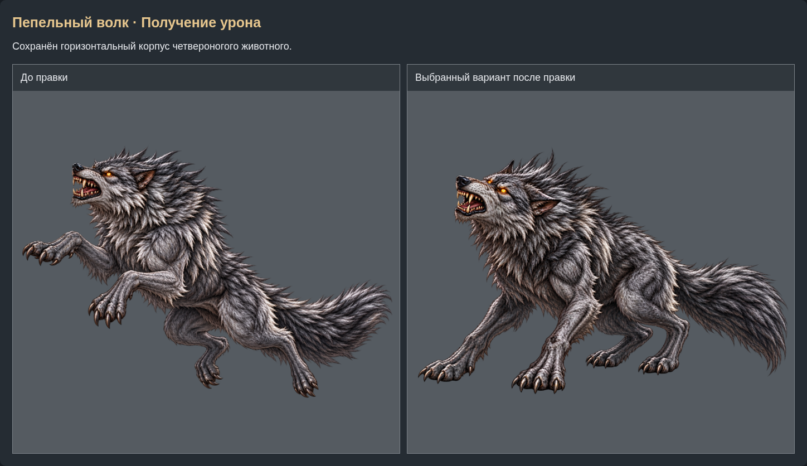
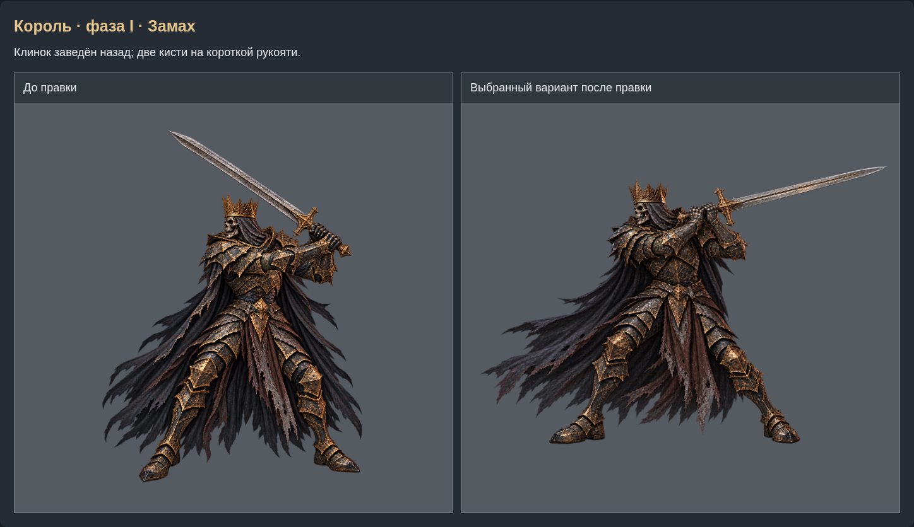
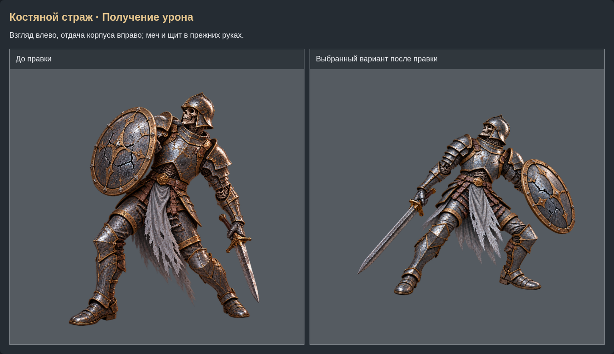
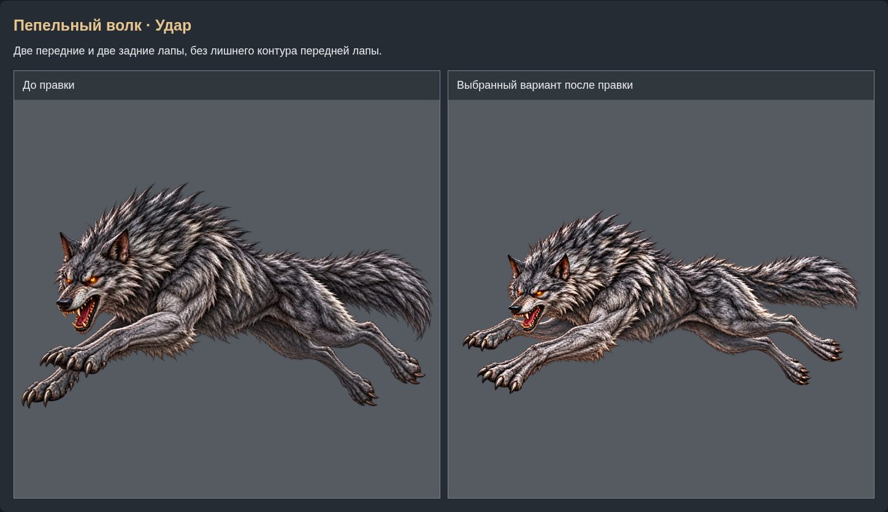
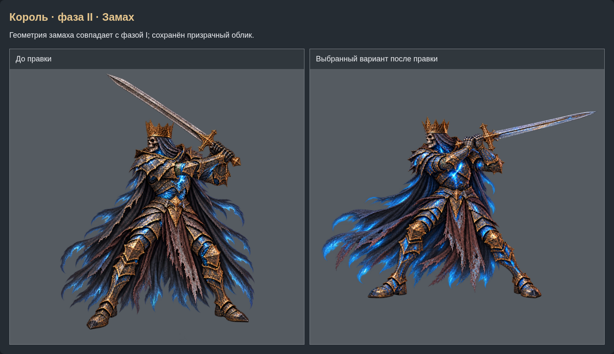
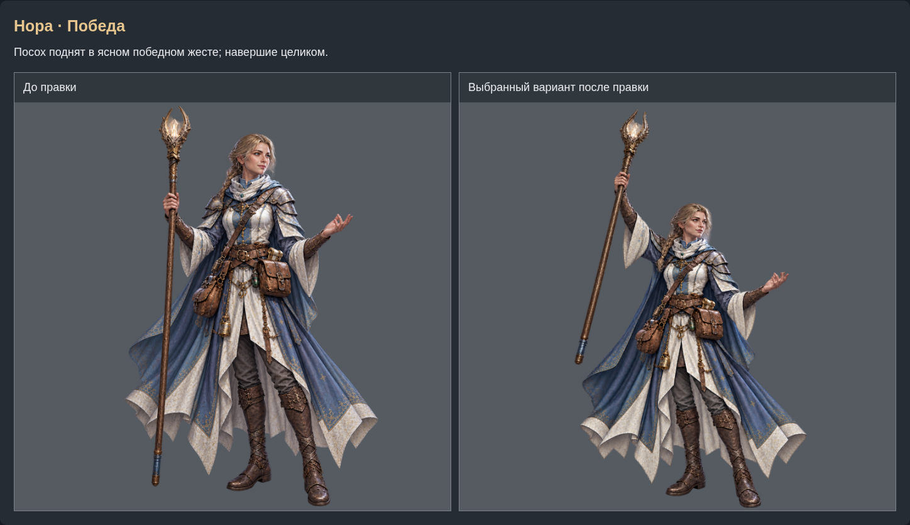
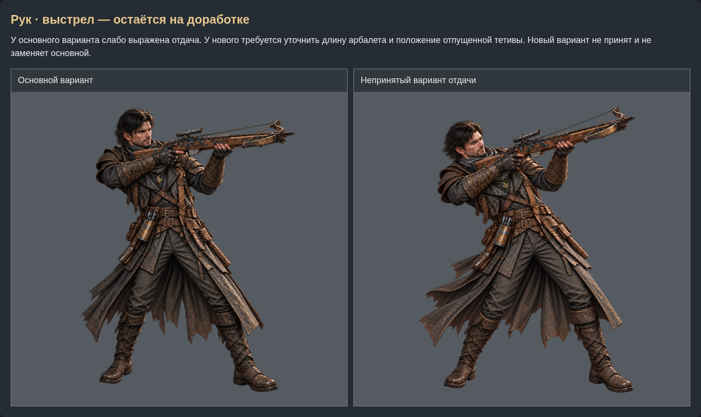

Нора · Выстрел
Восстановлено раздвоенное навершие; край одежды закончен внутри изображения.
Сохранённое сравнение от 29 октября
Гоблин · Замах
Два клинка разделены, у каждого отдельная рукоять и хват.
Сохранённое сравнение от 29 октября
Пепельный волк · Получение урона
Сохранён горизонтальный корпус четвероногого животного.
Сохранённое сравнение от 29 октября
Король · фаза I · Замах
Клинок заведён назад; две кисти на короткой рукояти.
Сохранённое сравнение от 29 октября
Костяной страж · Получение урона
Взгляд влево, отдача корпуса вправо; меч и щит в прежних руках.
Сохранённое сравнение от 29 октября
Пепельный волк · Удар
Две передние и две задние лапы, без лишнего контура передней лапы.
Сохранённое сравнение от 29 октября
Король · фаза II · Замах
Геометрия замаха совпадает с фазой I; сохранён призрачный облик.
Сохранённое сравнение от 29 октября
Нора · Победа
Посох поднят в ясном победном жесте; навершие целиком.
Сохранённое сравнение от 29 октября
Рук · выстрел — остаётся на доработке
У основного варианта слабо выражена отдача. У нового требуется уточнить длину арбалета и положение отпущенной тетивы. Новый вариант не принят и не заменяет основной.
Сохранённое сравнение от 29 октября